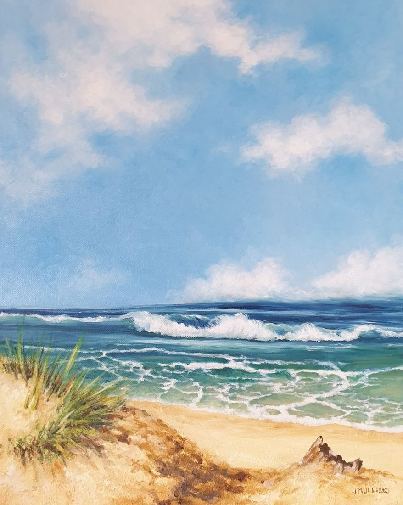

Path Down to the Sea
No. 9- Medium
- Oil on box canvas
- Size
- 50 × 40 cm
- Year
- 2020
- Price
- £400
This painting is mainly from imagination and extensive memories . I wanted to convey a sense of huge space with light clouds , an unthreatening, lazy sea and the sandy beach below the footpath invitingly close.
Ask about this paintingOr email enquiries@joanmullinsart.co.uk, quoting No. 9. UK only. Collection from Nantwich is free; UK postage is quoted when you enquire.
 Abandoned Shed
Abandoned Shed